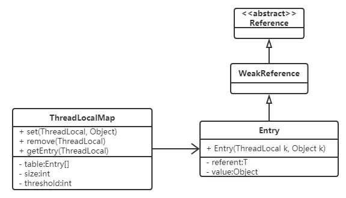

Thread-Specific Storage就是“线程独有的存储库”，该模式会对每个线程提供独有的内存空间。java.lang.ThreadLocal类提供了该模式的实现，ThreadLocal的实例是一种集合（collection）架构，该实例管理了很多对象，可以想象成一个保管有大量保险箱的房间。
java.lang.ThreadLocal类的方法：
Thread.currentThread()值作为键，来保存指定的值。Thread.currentThread()值作为键，获取保存指定的值。TSLog类：
//实际执行记录日志的类，每个线程都会拥有一个该类的实例
public class TSLog {
private PrintWriter writer = null;
public TSLog(String filename) {
try {
writer = new PrintWriter(new FileWriter(filename));
} catch (IOException e) {
e.printStackTrace();
}
}
public void println(String s) {
writer.println(s);
}
public void close() {
writer.println("==== End of log ====");
writer.close();
}
}
Log类：
public class Log {
private static final ThreadLocal<TSLog> tsLogCollection = new ThreadLocal<TSLog>();
public static void println(String s) {
getTSLog().println(s);
}
public static void close() {
getTSLog().close();
}
private static TSLog getTSLog() {
TSLog tsLog = (TSLog) tsLogCollection.get();
if (tsLog == null) {
tsLog = new TSLog(Thread.currentThread().getName() + "-log.txt");
tsLogCollection.set(tsLog);
}
return tsLog;
}
}
ClientThread类：
public class ClientThread extends Thread {
public ClientThread(String name) {
super(name);
}
public void run() {
System.out.println(getName() + " BEGIN");
for (int i = 0; i < 10; i++) {
Log.println("i = " + i);
try {
Thread.sleep(100);
} catch (InterruptedException e) {
}
}
Log.close();
System.out.println(getName() + " END");
}
}
执行：
Alice、Bobby、Chris三个线程调用Log类的同一个方法，但实际上每个线程都拥有独自的TSLog实例。
public class Main {
public static void main(String[] args) {
new ClientThread("Alice").start();
new ClientThread("Bobby").start();
new ClientThread("Chris").start();
}
}
Thread-Specific Storage模式的角色如下：
java.lang.ThreadLocal类就是TSObjectCollection）JDK中有一个类就实现了Thread-Specific Storage模式，即ThreadLocal，ThreadLocal类主要有四个方法：
1、初始化返回值的方法：
该方法实现只返回 null，并且修饰符为protected，很明显，如果用户想返回初始值不为null，则需要重写该方法；
protected T initialValue() {
return null;
}
2、get方法，获取线程本地副本变量
public T get() {
Thread t = Thread.currentThread();
ThreadLocalMap map = getMap(t);
if (map != null) {
ThreadLocalMap.Entry e = map.getEntry(this);
if (e != null) {
T result = (T)e.value;
return result;
}
}
return setInitialValue();
}
3、set方法，设置线程本地副本变量
public void set(T value) {
Thread t = Thread.currentThread();
ThreadLocalMap map = getMap(t);
if (map != null)
map.set(this, value);
else
createMap(t, value);
}
4、remove方法，移除线程本地副本变量
public void remove() {
ThreadLocalMap m = getMap(Thread.currentThread());
if (m != null)
m.remove(this);
}
如果需要我们自己来设计ThreadLocal对象，那么，一般的实现思路：设计一个线程安全的Map，key就是当前线程对象，Value就是线程本地变量的值。
然而，JDK的实现思路：
让每个Thread对象，自身持有一个Map，这个Map的Key就是当前ThreadLocal对象，Value是本地线程变量值。相对于加锁的实现方式，这样做可以提升性能，其实是一种以时间换空间的思路。
ThreadLocal的内部结构示意图
ThreadLocal类有个getMap()方法，其实就是返回Thread对象自身的Map——threadLocals。
ThreadLocalMap getMap(Thread t) {
return t.threadLocals;
}
threadLocals是一种ThreadLocal.ThreadLocalMap类型的数据结构，作为内部类定义在ThreadLocal类中，其内部采用一种WeakReference的方式保存键值对。

Entry继承了WeakReference：
static class Entry extends WeakReference<ThreadLocal<?>> {
/** The value associated with this ThreadLocal. */
Object value;
Entry(ThreadLocal<?> k, Object v) {
super(k);
value = v;
}
}
Hash冲突
ThreadLocalMap中解决Hash冲突采用线性探测的方式。所谓线性探测：
就是根据初始key的hashcode值确定元素在table数组中的位置，如果发现这个位置上已经有其他key值的元素被占用，则利用固定的算法寻找一定步长的下个位置，依次判断，直至找到能够存放的位置。
ThreadLocalMap采用线性探测的方式解决Hash冲突的效率很低（简单地步长+1），所以如果有大量不同的ThreadLocal对象放入map中时发送冲突，则效率很低。
使用建议
每个线程只存一个变量，这样的话所有的线程存放到map中的Key都是相同的ThreadLocal，如果一个线程要保存多个变量，就需要创建多个ThreadLocal，多个ThreadLocal放入Map中时会极大的增加Hash冲突的可能。
内存泄漏
ThreadLocal在ThreadLocalMap中是以一个弱引用类型被Entry中的Key引用的，因此如果ThreadLocal没有外部强引用来引用它，那么ThreadLocal会在下次JVM垃圾收集时被回收。
这个时候就会出现Entry中Key已经被回收，出现一个null Key的情况，外部读取ThreadLocalMap中的元素是无法通过null Key来找到Value的。
因此如果当前线程的生命周期很长，一直存在，那么其内部的ThreadLocalMap对象也一直生存下来，这些null key就存在一条强引用链的关系一直存在：Thread --> ThreadLocalMap-->Entry-->Value，这条强引用链会导致Entry不会回收，Value也不会回收，但Entry中的Key却已经被回收的情况，造成内存泄漏。
static class Entry extends WeakReference<ThreadLocal<?>> {
/** The value associated with this ThreadLocal. */
Object value;
Entry(ThreadLocal<?> k, Object v) {
super(k);
value = v;
}
}
但JVM团队已经考虑到这样的情况，并做了一些措施来保证ThreadLocal尽量不会内存泄漏：
在ThreadLocal的get()、set()、remove()方法调用的时候会清除掉线程的ThreadLocalMap中所有Entry中Key为null的Value，并将整个Entry设置为null，利于下次内存回收。
最好的解决方案：
每次使用完ThreadLocal，都调用它的remove()方法，清除数据。